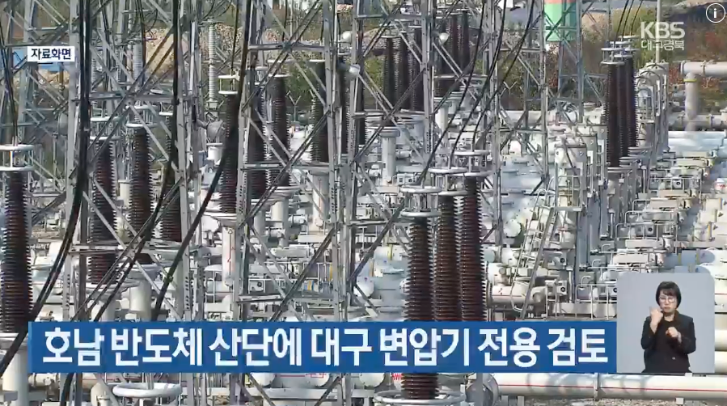

호남권 반도체 산업단지에 전력을 조기 공급하기 위해 대구 등 5개 지역 변전소에 들어갈 변압기를 돌려쓰는 방안이 검토되고 있습니다.
https://news.kbs.co.kr/news/pc/view/view.do?ncd=8696906&ref=A

호남권 반도체 산업단지에 전력을 조기 공급하기 위해 대구 등 5개 지역 변전소에 들어갈 변압기를 돌려쓰는 방안이 검토되고 있습니다.
https://news.kbs.co.kr/news/pc/view/view.do?ncd=8696906&ref=A
전라도에 반도체?
호 ~ 남
공공은 일처리가 빠를수없음 ㅋㅋ 얘네가 사업가도 아니고 적당히 추진하면서 뒤로 슈킹만하지
여수 못봤냐 ㅋㅋ
이젠 국민눈치 안봐도 된다요
잼버리도 여수박람회도 다 넘어가주는데 ㅋㅋ
저쪽이 해쳐먹기 좋지 ㅎㅎ 우덜식이걸랑
나가리될거같은데 그냥 시늉만 존나 하다가
나라가 분열과 갈라치기를 만들고있음
그냥 부산으로 와라. 쪼끄만 나라에 2개 경제권이면 되고 부산은 살고 싶어하는 사람많잖아.
하든지 말든지
카페사장이 심사위원임ㅋㅋ